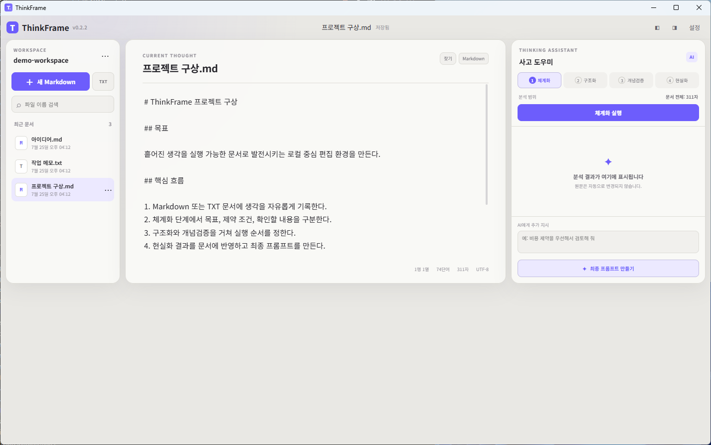

일반 텍스트 편집
Markdown과 TXT 문서를 만들고 찾기·바꾸기, 자동 저장, 문서 정리를 사용할 수 있습니다.
Markdown과 일반 텍스트를 편집하고, AI 사고 도우미로 체계화부터 최종 프롬프트까지 한곳에서 완성하세요.

Markdown과 TXT 문서를 만들고 찾기·바꾸기, 자동 저장, 문서 정리를 사용할 수 있습니다.
체계화, 구조화, 개념검증, 현실화를 거쳐 최종 작업 프롬프트로 발전시킵니다.
문서는 선택한 작업공간에 저장되며 AI 분석을 실행할 때만 설정한 API로 전송됩니다.
별도의 디자인 목업이 아닌 Windows에 설치한 ThinkFrame v0.2.2에서 데모 작업공간을 연 화면입니다.
문서를 특별한 형식으로 옮길 필요가 없습니다. 기존 폴더를 작업공간으로 지정하면 그 안의 Markdown과 TXT 파일을 바로 편집할 수 있습니다.
운영체제에 맞는 설치 파일을 내려받거나 아래 터미널 명령으로 설치한 뒤 ThinkFrame을 실행합니다.
첫 화면의 작업공간 선택을 누르고 문서를 보관할 로컬 폴더를 지정합니다.
새 Markdown 또는 TXT 문서를 만들고 편집합니다. 자동 저장, 찾기·바꾸기, 이름 변경과 복제를 지원합니다.
설정에 OpenAI 호환 API를 연결한 뒤 체계화·구조화·개념검증·현실화를 실행하고, 필요한 결과만 문서에 반영합니다.
GitHub Releases에서 최신 안정 버전을 제공합니다.
Windows 10/11 · x64
Setup.exe 다운로드Apple Silicon · Intel
Debian / Ubuntu · x64
DEB 다운로드$s="$env:TEMP\install-thinkframe.ps1"; iwr
"https://raw.githubusercontent.com/leondic1976/Deploy-Think-Frame-Concept-Edit-TFCedit/main/install.ps1"
-OutFile $s; powershell -ExecutionPolicy Bypass -File $s
설치 전에 릴리스의 SHA-256 체크섬을 자동으로 검증합니다.